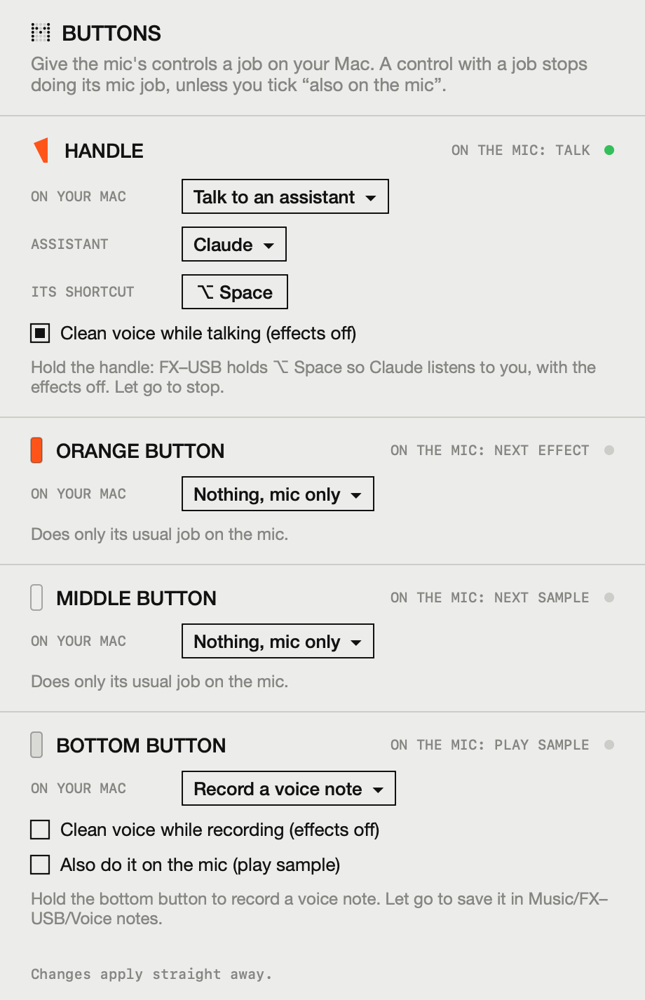

<title>FX–USB</title>
<link rel="preconnect" href="https://fonts.googleapis.com">
<link rel="preconnect" href="https://fonts.gstatic.com" crossorigin>
<link rel="stylesheet" href="https://fonts.googleapis.com/css2?family=Inter:wght@400;500;600&display=swap">
<style>
/* Layout: a printed user guide for the mic, read top to bottom. Numbered black chapter bars,
   outlined cards with grey title strips, flat outlined drawings, uppercase type throughout.
   One light, paper-like look on purpose (a manual), so there is no dark variant. */
:root {
  --paper: #EFF0EE;
  --ink: #1C1C1C;
  --line: #262626;
  --strip: #DCDDDA;
  --quiet: #4F4F4C;
  --orange: #EB5B2D;
  --red: #E5322B;
  --yellow: #F8BC3F;
  --sans: Inter, "Helvetica Neue", Helvetica, Arial, sans-serif;
  color-scheme: light;
}

* { box-sizing: border-box; }
body {
  margin: 0;
  background: var(--paper);
  color: var(--ink);
  font: 400 14px/1.35 var(--sans);
  text-transform: uppercase;
  letter-spacing: 0.01em;
  -webkit-font-smoothing: antialiased;
}
a { color: inherit; }
img, video { max-width: 100%; display: block; }
p { margin: 0; }
h1, h2, h3 { margin: 0; font-weight: 400; }
.wrap { max-width: 1180px; margin: 0 auto; padding-inline: max(16px, 3vw); }
:focus-visible { outline: 3px solid var(--orange); outline-offset: 3px; }

/* ── Guide header ───────────────────────────────────── */
.masthead { display: grid; grid-template-columns: 1.4fr 1fr 1fr auto; gap: 24px; align-items: end; padding-block: 36px 8px; }
.masthead .name { display: flex; align-items: center; gap: 14px; font-size: clamp(40px, 6vw, 64px); line-height: 0.9; font-weight: 400; letter-spacing: -0.01em; }
.masthead .mark { width: 0.62em; height: 0.62em; flex: none; }
.masthead .mark circle { fill: var(--ink); }
.masthead .mark circle.dim { opacity: 0.15; }
.masthead small { font-size: 13px; line-height: 1.25; display: block; }
.masthead .ver { text-align: right; }
.unofficial { display: inline-block; margin-top: 6px; padding: 2px 6px; border: 1.5px solid var(--ink); font-size: 11px; font-weight: 500; }

/* ── Hero ───────────────────────────────────────────── */
.hero-art { display: flex; justify-content: center; padding-block: 24px 8px; }
#hero-mic { width: min(100%, 520px); height: auto; overflow: visible; }
.now { text-align: center; font-size: 12px; color: var(--quiet); }
.now b { color: var(--ink); font-weight: 500; }
.intro { display: grid; grid-template-columns: 1fr 1fr; gap: 32px; padding-block: 40px 48px; }
.intro p { font-size: clamp(17px, 2vw, 22px); line-height: 1.25; }
.get-row { display: flex; gap: 16px; align-items: center; flex-wrap: wrap; margin-top: 22px; }
.tag {
  display: inline-flex; align-items: center; gap: 12px;
  border: 2.5px solid var(--ink); background: var(--orange); color: #fff;
  padding: 10px 18px; font-size: 20px; font-weight: 500; text-decoration: none;
}
.tag:hover { background: var(--ink); }
.tag svg { width: 16px; height: 16px; }
.get-row small { font-size: 12px; color: var(--quiet); }

/* ── Chapters ───────────────────────────────────────── */
.chapter { border-top: 1.5px solid var(--line); padding-block: 56px 24px; }
.bar { display: flex; align-items: center; gap: 22px; background: var(--ink); color: var(--paper); padding: 7px 12px; margin-bottom: 14px; }
.bar .num { width: 32px; height: 32px; flex: none; border: 2px solid var(--paper); border-radius: 50%; display: grid; place-items: center; font-size: 16px; }
.bar h2 { font-size: clamp(20px, 2.6vw, 28px); line-height: 1.1; }
.lead { max-width: 70ch; margin-bottom: 18px; font-size: 15px; color: var(--quiet); }

.cards { display: grid; gap: 12px; }
.cards.two { grid-template-columns: repeat(2, 1fr); }
.cards.four { grid-template-columns: repeat(4, 1fr); }
figure { margin: 0; display: grid; gap: 10px; align-content: start; min-width: 0; }
.card { border: 1.5px solid var(--line); background: var(--paper); display: flex; flex-direction: column; min-width: 0; }
.card .strip { background: var(--strip); border-bottom: 1.5px solid var(--line); padding: 7px 10px; font-size: 14px; font-weight: 500; }
.card .art { padding: 14px; display: flex; justify-content: center; align-items: center; min-height: 210px; }
.card .art svg { width: 100%; max-width: 260px; height: auto; overflow: visible; }
.card .text { padding: 16px 14px; display: grid; gap: 8px; align-content: start; }
figcaption { font-size: 13px; line-height: 1.3; color: var(--ink); }
figcaption .hint { color: var(--quiet); }

/* Hardware overview */
.overview { border: 1.5px solid var(--line); padding: 12px; }
.overview svg { width: 100%; height: auto; display: block; }
.callouts { display: none; list-style: none; margin: 14px 0 0; padding: 0; gap: 8px; }
.callouts li { display: grid; grid-template-columns: auto 1fr; gap: 10px; align-items: baseline; }
.callouts b { border: 2px solid var(--ink); padding: 1px 6px; font-weight: 500; white-space: nowrap; }
.callouts b.o { background: var(--orange); color: #fff; }

.film video { width: 100%; height: auto; background: #000; }
.film .card .art { padding: 0; min-height: 0; }

.desktop { width: 100%; height: auto; display: block; }
.desktop text { font-family: var(--sans); text-transform: none; fill: #F2F2F0; letter-spacing: 0; }

.big { font-size: clamp(56px, 7vw, 84px); line-height: 1; font-weight: 400; letter-spacing: -0.02em; }
.big em { font-style: normal; color: var(--orange); }

.notice h2 { font-size: clamp(28px, 4vw, 44px); text-align: center; margin-bottom: 28px; }
.qa { columns: 3 280px; column-gap: 28px; }
.qa div { break-inside: avoid; margin-bottom: 22px; display: grid; gap: 6px; }
.qa h3 { font-size: 14px; font-weight: 600; }
.qa p { font-size: 13px; color: var(--quiet); }

.cmd { margin: 0 0 22px; padding: 12px 14px; border: 1.5px solid var(--line); background: #E4E5E2; font: 500 12px/1.5 ui-monospace, "SF Mono", Menlo, monospace; text-transform: none; white-space: pre-wrap; word-break: break-all; user-select: all; }
.get-row small a { color: inherit; }
.spec { display: grid; grid-template-columns: repeat(4, 1fr); border: 1.5px solid var(--line); }
.spec div { padding: 14px; border-right: 1.5px solid var(--line); display: grid; gap: 4px; }
.spec div:last-child { border-right: 0; }
.spec span { font-size: 11px; color: var(--quiet); }
.spec b { font-weight: 500; font-size: 16px; }

/* The "unofficial" stamp: a yellow warning triangle pinned bottom left. */
.stamp {
  position: fixed; z-index: 10;
  left: 16px; bottom: calc(16px + env(safe-area-inset-bottom, 0px));
  width: min(400px, calc(100vw - 32px)); aspect-ratio: 400 / 360;
  text-transform: none; letter-spacing: 0;
  filter: drop-shadow(0 10px 22px rgba(0, 0, 0, 0.18));
}
.stamp .tri { position: absolute; inset: 0; width: 100%; height: 100%; }
.stamp .inner {
  position: absolute; left: 13%; right: 13%; top: 17%; bottom: 7%;
  display: flex; flex-direction: column; align-items: center; justify-content: flex-end; gap: 4%; text-align: center;
}
.stamp .hand { width: 27%; height: auto; }
.stamp p { font-size: clamp(12px, 3.6vw, 15px); line-height: 1.25; color: var(--ink); }
.stamp p b { display: block; font-size: 1.35em; font-weight: 600; text-transform: uppercase; letter-spacing: 0.02em; }
.stamp .actions { display: flex; gap: 8px; width: 100%; }
.stamp .pill {
  flex: 1; border-radius: 999px; border: 1.5px solid var(--ink); padding: 0.55em 0;
  font: 400 clamp(13px, 3.8vw, 16px) var(--sans); text-transform: none; text-align: center; text-decoration: none;
  background: transparent; color: var(--ink); cursor: pointer;
}
.stamp .pill.solid { background: var(--ink); color: var(--yellow); }
.stamp .pill:hover { background: var(--ink); color: var(--yellow); }

footer { border-top: 1.5px solid var(--line); margin-top: 56px; padding-block: 24px 40px; }
footer .wrap { display: flex; justify-content: space-between; gap: 16px; flex-wrap: wrap; font-size: 11px; color: var(--quiet); }

@media (max-width: 900px) {
  .masthead { grid-template-columns: 1fr 1fr; }
  .masthead .ver { text-align: left; }
  .cards.four { grid-template-columns: repeat(2, 1fr); }
  .spec { grid-template-columns: repeat(2, 1fr); }
  .spec div:nth-child(2) { border-right: 0; }
  .spec div:nth-child(-n+2) { border-bottom: 1.5px solid var(--line); }
}
@media (max-width: 640px) {
  .intro, .cards.two { grid-template-columns: 1fr; }
  .callouts { display: grid; }
}
@media (max-width: 460px) {
  .cards.four { grid-template-columns: 1fr; }
  .masthead { grid-template-columns: 1fr; }
}
</style>

<header class="wrap masthead" id="top">
  <div class="name"><svg class="mark" viewBox="0 0 50 50" aria-hidden="true" id="mark"></svg><h1 style="font-size:inherit">FX—USB</h1></div>
  <div><small>USB audio<br>for EP—2350 FX mic</small></div>
  <div><small>User<br>guide</small></div>
  <div class="ver"><small>Ver 0.3</small><span class="unofficial">Unofficial</span></div>
</header>

<main>
  <div class="wrap">
    <div class="hero-art">
      <svg id="hero-mic" viewBox="0 0 360 400" role="img" aria-label="Drawing of the FX MIC: its red effect light and white sample light are on, and the grille glows as someone talks"></svg>
    </div>
    <p class="now" aria-live="off">Effect: <b id="now-effect">ECHO</b> · Sample: <b id="now-sample">CLAPS</b> · Handle: <b id="now-handle">held</b></p>

    <div class="intro">
      <p>FX–USB turns your FX MIC into a microphone for your Mac. Plug it in with a USB-C cable, open the app, and choose FX–USB in Zoom, Meet or any app you talk into.</p>
      <div>
        <p>All the mic's effects come through. The app shows the mic's lights, lets you switch effects from your Mac, records with one click, and lets you hear yourself on your speakers.</p>
        <div class="get-row">
          <a class="tag" href="https://github.com/danilosierrac/fx-usb/releases/latest/download/FX-USB.pkg">Download for Mac
            <svg viewBox="0 0 16 16" aria-hidden="true"><path d="M8 1v10M3.5 7 8 11.5 12.5 7M2 14.5h12" stroke="currentColor" stroke-width="2" fill="none"/></svg>
          </a>
          <small>Free · Macs with an Apple chip · <a href="#get">how to install</a></small>
        </div>
      </div>
    </div>
  </div>

  <section class="chapter wrap" aria-labelledby="c1">
    <div class="bar"><span class="num">1</span><h2 id="c1">Your mic, with FX–USB</h2></div>
    <p class="lead">Everything on the mic still works the way it always has. This is what each part does while it is plugged into your Mac.</p>
    <div class="overview">
      <svg id="overview" viewBox="0 0 1000 450" role="img" aria-label="The FX MIC with labels: microphone grille, hold handle to talk, red effect light, orange button for the next effect, middle button for the next sample, white sample light, bottom button to play the sample, and the USB-C port under the lid that goes to your Mac"></svg>
      <ul class="callouts">
        <li><b>Hold to talk</b><span>Push the orange handle in. The mic only sends sound while you hold it.</span></li>
        <li><b class="o">Effect light</b><span>The red light shows which effect is on. No light means clean.</span></li>
        <li><b class="o">Next effect</b><span>The orange button. Clean, echo, spring, pixie, robot.</span></li>
        <li><b>Next sample</b><span>The middle button picks the horn, claps, bell or the fourth one.</span></li>
        <li><b>Sample light</b><span>The white light shows which sample is picked.</span></li>
        <li><b>Play sample</b><span>The bottom button plays it.</span></li>
        <li><b class="o">USB-C to Mac</b><span>The port is under the lower lid.</span></li>
      </ul>
    </div>
  </section>

  <section class="chapter wrap film" aria-labelledby="c2">
    <div class="bar"><span class="num">2</span><h2 id="c2">See it work</h2></div>
    <div class="cards two">
      <figure>
        <div class="card">
          <div class="strip">Demo · sound on</div>
          <div class="art">
            <video src="demo.mp4" poster="demo-poster.jpg" controls playsinline preload="metadata" width="820" height="848"
              aria-label="Demo: talking into the FX MIC while recording in Photo Booth and switching effects; the FX–USB menu bar panel follows along"></video>
          </div>
        </div>
      </figure>
      <figure>
        <div class="card">
          <div class="strip">What happens</div>
          <div class="text">
            <p>The mic is plugged into a Mac with a USB-C cable and Photo Booth is recording.</p>
            <p>Each press of the mic's orange button changes the effect. The FX–USB panel in the menu bar shows the new effect straight away.</p>
            <p>Photo Booth needs no setup. It records from FX–USB because the app makes it the Mac's microphone while it is open.</p>
          </div>
        </div>
      </figure>
    </div>
  </section>

  <section class="chapter wrap" aria-labelledby="c3">
    <div class="bar"><span class="num">3</span><h2 id="c3">Setting up</h2></div>
    <p class="lead">About two minutes, once. After that, plug in the mic and talk.</p>
    <div class="cards four">
      <figure>
        <div class="card"><div class="strip">Plug in</div><div class="art"><svg id="art-plug" viewBox="0 0 260 230" aria-hidden="true"></svg></div></div>
        <figcaption>Lift the lower lid and connect a USB-C cable to the port inside. <span class="hint">Use a cable that can transfer data, like your phone's. Some cheap cables only charge. The cable powers the mic, so no batteries needed.</span></figcaption>
      </figure>
      <figure>
        <div class="card"><div class="strip">Open FX–USB</div><div class="art"><svg id="art-app" viewBox="0 0 260 230" aria-hidden="true"></svg></div></div>
        <figcaption>Install it once with FX-USB.pkg (see chapter 8), then open FX–USB from Applications. <span class="hint">It finds the mic by itself and says LIVE.</span></figcaption>
      </figure>
      <figure>
        <div class="card"><div class="strip">Pick FX–USB</div><div class="art"><svg id="art-pick" viewBox="0 0 260 230" aria-hidden="true"></svg></div></div>
        <figcaption>In Zoom: Settings → Audio → Microphone. In Meet: Settings → Audio. <span class="hint">Voice Memos, Photo Booth and most other apps use it on their own.</span></figcaption>
      </figure>
      <figure>
        <div class="card"><div class="strip">Hold and talk</div><div class="art"><svg id="art-hold" viewBox="0 0 260 230" aria-hidden="true"></svg></div></div>
        <figcaption>Push the handle in and talk. <span class="hint">Let go and the mic goes quiet, like a walkie-talkie.</span></figcaption>
      </figure>
    </div>
  </section>

  <section class="chapter wrap" aria-labelledby="c4">
    <div class="bar"><span class="num">4</span><h2 id="c4">The app</h2></div>
    <p class="lead">A window that shows your mic as it is right now, and the same controls in the menu bar at the top of your screen.</p>
    <div class="card">
      <div class="strip">On your Mac</div>
      <div class="art" style="padding:0">
        <svg class="desktop" viewBox="0 0 1200 760" role="img" aria-label="A Mac desktop with the FX–USB window open and the FX–USB panel open under its icon in the menu bar">
          <defs>
            <linearGradient id="wall" x1="0" y1="0" x2="0.6" y2="1"><stop offset="0" stop-color="#A3A4A0"/><stop offset="1" stop-color="#55564F"/></linearGradient>
            <filter id="lift" x="-30%" y="-20%" width="160%" height="150%"><feDropShadow dx="0" dy="16" stdDeviation="16" flood-color="#000" flood-opacity="0.4"/></filter>
            <clipPath id="win"><rect x="150" y="70" width="300" height="570" rx="11"/></clipPath>
            <clipPath id="pan"><rect x="762" y="46" width="270" height="319" rx="13"/></clipPath>
          </defs>
          <rect width="1200" height="760" fill="url(#wall)"/>
          <rect width="1200" height="32" fill="#141414" fill-opacity="0.9"/>
          <text x="24" y="21" font-size="14" font-weight="600">FX–USB</text>
          <text x="96" y="21" font-size="14">File</text>
          <text x="140" y="21" font-size="14">Edit</text>
          <text x="184" y="21" font-size="14">Window</text>
          <rect x="880" y="5" width="34" height="22" rx="7" fill="#FFFFFF" fill-opacity="0.22"/>
          <g fill="#F2F2F0" id="menu-mark"></g>
          <g fill="none" stroke="#F2F2F0" stroke-width="1.8" stroke-linecap="round"><path d="M942 13 a12 12 0 0 1 16 0"/><path d="M945 16.5 a7 7 0 0 1 10 0"/></g>
          <circle cx="950" cy="20.5" r="1.8" fill="#F2F2F0"/>
          <rect x="972" y="10" width="22" height="12" rx="3" fill="none" stroke="#F2F2F0" stroke-width="1.4"/>
          <rect x="974.5" y="12.5" width="14" height="7" rx="1.5" fill="#F2F2F0"/>
          <rect x="995.5" y="14" width="2" height="4" rx="1" fill="#F2F2F0"/>
          <text x="1176" y="21" font-size="14" text-anchor="end">Fri 2 Oct  23:41</text>
          <g filter="url(#lift)"><image href="app-window.png" x="150" y="70" width="300" height="570" clip-path="url(#win)"/></g>
          <circle cx="168" cy="87" r="6" fill="#FF5F57"/><circle cx="188" cy="87" r="6" fill="#FEBC2E"/><circle cx="208" cy="87" r="6" fill="#28C840"/>
          <g filter="url(#lift)">
            <path d="M897 38 L888 47 H906 Z" fill="#ECECEA"/>
            <image href="app-panel.png" x="762" y="46" width="270" height="319" clip-path="url(#pan)"/>
          </g>
          <rect x="390" y="682" width="420" height="68" rx="20" fill="#FFFFFF" fill-opacity="0.2" stroke="#FFFFFF" stroke-opacity="0.25"/>
          <g transform="translate(404 690)">
            <rect width="52" height="52" rx="12" fill="#D9D9D5"/>
            <rect x="58" width="52" height="52" rx="12" fill="#6E6E69"/>
            <rect x="116" width="52" height="52" rx="12" fill="#B9B9B4"/>
            <rect x="174" width="52" height="52" rx="12" fill="#2E2E2B"/>
            <rect x="232" width="52" height="52" rx="12" fill="#ECECE9"/>
            <image href="app-icon.png" x="283.5" y="-6.5" width="65" height="65"/>
            <rect x="348" width="52" height="52" rx="12" fill="#8C8C87"/>
            <circle cx="316" cy="58" r="2.2" fill="#F2F2F0"/>
          </g>
        </svg>
      </div>
    </div>
    <div class="cards two" style="margin-top:12px">
      <figcaption><b>The window.</b> <span class="hint">Open it from the Dock. It shows your mic with its lights, the effect and sample by name, and big buttons to record, mute and hear yourself.</span></figcaption>
      <figcaption><b>The menu bar.</b> <span class="hint">Click the dotted M at the top of your screen. The same controls drop down, so you can change things mid-call.</span></figcaption>
    </div>
  </section>

  <section class="chapter wrap" aria-labelledby="cb">
    <div class="bar"><span class="num">5</span><h2 id="cb">Buttons on your Mac</h2></div>
    <p class="lead">Give the mic's handle and buttons a job on your Mac: talk to an assistant, record a voice note, press a shortcut. In the app, click SET UP next to BUTTONS.</p>
    <div class="cards two">
      <figure>
        <div class="card"><div class="strip">The buttons window</div><div class="art" style="padding:18px"></div></div>
        <figcaption>Pick a job for each control from the list. <span class="hint">A green light shows when you press it, and the grey line under each one says exactly what will happen.</span></figcaption>
      </figure>
      <div class="cards" style="align-content:start">
        <figure>
          <div class="card"><div class="strip">Talk to an assistant</div><div class="text"><p>Hold the handle and FX–USB holds your assistant's talk shortcut, so ChatGPT, Claude, Siri or Dictation listens. Let go and it stops.</p><p>The effects switch off while you talk, so the assistant hears your clean voice and understands you better. You can turn that off.</p></div></div>
          <figcaption>Use the push-to-talk or dictation shortcut from your assistant's settings, then record the same keys in FX–USB.</figcaption>
        </figure>
        <figure>
          <div class="card"><div class="strip">Voice notes</div><div class="text"><p>Hold a button to record, let go to save. Notes go to Music/FX–USB/Voice notes.</p></div></div>
        </figure>
        <figure>
          <div class="card"><div class="strip">Shortcuts</div><div class="text"><p>Press any keyboard shortcut, or run a Shortcut from the Shortcuts app.</p></div></div>
        </figure>
        <figure>
          <div class="card"><div class="strip">Good to know</div><div class="text"><p>A button with a Mac job stops doing its mic job, unless you tick "also on the mic". The handle always lets your voice through.</p><p>Pressing keys for other apps needs a one-time permission: System Settings → Privacy &amp; Security → Accessibility → FX–USB.</p></div></div>
        </figure>
      </div>
    </div>
  </section>

  <section class="chapter wrap" aria-labelledby="c5">
    <div class="bar"><span class="num">6</span><h2 id="c5">What you can do</h2></div>
    <div class="cards four">
      <figure>
        <div class="card"><div class="strip">Effects</div><div class="art"><span class="big">4<em>!</em></span></div></div>
        <figcaption>Echo, spring, pixie and robot work in calls and recordings. <span class="hint">Switch on the mic, or click its buttons in the app.</span></figcaption>
      </figure>
      <figure>
        <div class="card"><div class="strip">Lights</div><div class="art"><svg id="art-lights" viewBox="0 0 260 200" aria-hidden="true"></svg></div></div>
        <figcaption>See what the mic is doing. <span class="hint">The app shows its lights, buttons and handle as they move.</span></figcaption>
      </figure>
      <figure>
        <div class="card"><div class="strip">Speakers</div><div class="art"><svg id="art-speaker" viewBox="0 0 260 200" aria-hidden="true"></svg></div></div>
        <figcaption>Hear yourself on your Mac or headphones. <span class="hint">Built-in protection stops the howl you get when a mic hears its own speaker.</span></figcaption>
      </figure>
      <figure>
        <div class="card"><div class="strip">Record</div><div class="art"><svg id="art-rec" viewBox="0 0 260 200" aria-hidden="true"></svg></div></div>
        <figcaption>One click records. <span class="hint">Recordings go to your Music folder.</span></figcaption>
      </figure>
      <figure>
        <div class="card"><div class="strip">Samples</div><div class="art"><span class="big">4<em>!</em></span></div></div>
        <figcaption>Horn, claps, bell and one more. <span class="hint">They come through too, so the horn can go off in a meeting.</span></figcaption>
      </figure>
      <figure>
        <div class="card"><div class="strip">Sound</div><div class="art"><span class="big">0<em>!</em></span></div></div>
        <figcaption>Gaps or crackles. <span class="hint">The sound stays smooth on long calls, even while the mic plays effects.</span></figcaption>
      </figure>
      <figure>
        <div class="card"><div class="strip">Your mic</div><div class="art"><span class="big">0<em>!</em></span></div></div>
        <figcaption>Changes to it. <span class="hint">Nothing is installed on the mic. Unplug it and it is exactly as before.</span></figcaption>
      </figure>
      <figure>
        <div class="card"><div class="strip">Price</div><div class="art"><span class="big">0<em>€</em></span></div></div>
        <figcaption>FX–USB is free.</figcaption>
      </figure>
    </div>
  </section>

  <section class="chapter wrap" aria-labelledby="c6">
    <div class="bar"><span class="num">7</span><h2 id="c6">Only have the headphone plug?</h2></div>
    <p class="lead">The cable that comes out of the FX MIC ends in a headphone-style plug. It sends sound out, like a speaker cable. FX–USB uses the USB-C port instead, so you don't need it. If you'd rather use the plug, here is what works.</p>
    <div class="cards four">
      <figure>
        <div class="card"><div class="strip">Won't work</div><div class="art"><svg id="art-socket" viewBox="0 0 260 200" aria-hidden="true"></svg></div></div>
        <figcaption>Straight into the Mac's headphone socket. <span class="hint">The Mac thinks you plugged in headphones and doesn't listen. A plain USB-C headphone adapter has the same problem.</span></figcaption>
      </figure>
      <figure>
        <div class="card"><div class="strip">Easiest</div><div class="art"><svg id="art-dongle" viewBox="0 0 260 200" aria-hidden="true"></svg></div></div>
        <figcaption>A USB-C sound adapter with a microphone socket. <span class="hint">Pick one with two sockets. Plug the mic into the microphone one, then choose "USB Audio Device" as your microphone.</span></figcaption>
      </figure>
      <figure>
        <div class="card"><div class="strip">Best sound</div><div class="art"><svg id="art-interface" viewBox="0 0 260 200" aria-hidden="true"></svg></div></div>
        <figcaption>A USB audio interface. <span class="hint">The small boxes musicians use. Plug the mic into a "line in" socket, which handles its loud signal without distorting.</span></figcaption>
      </figure>
      <figure>
        <div class="card"><div class="strip">Turn</div><div class="art"><svg id="art-turn" viewBox="0 0 260 200" aria-hidden="true"></svg></div></div>
        <figcaption>If it sounds distorted, it's too loud. <span class="hint">Lift the lower lid and turn the small round volume dial down a little.</span></figcaption>
      </figure>
    </div>
  </section>

  <section class="chapter wrap notice" aria-labelledby="c7">
    <h2 id="c7">Questions. Read these first.</h2>
    <div class="qa">
      <div><h3>What do I need?</h3><p>An FX MIC, a Mac with an Apple chip (M1 or newer) running macOS 13 or later, and a USB-C cable that can transfer data.</p></div>
      <div><h3>I can't hear myself in my call.</h3><p>Check three things. The FX–USB app is open and says LIVE. You chose FX–USB as the microphone in your call app. You're holding the handle in.</p></div>
      <div><h3>Is it made by teenage engineering?</h3><p>No. FX–USB is a free, independent app. Teenage engineering doesn't make or support it.</p></div>
      <div><h3>Can it harm my mic?</h3><p>No. While the app runs, it borrows a little of the mic's memory. Nothing is saved on the mic, and unplugging it puts everything back.</p></div>
      <div><h3>Why do I have to hold the handle?</h3><p>That's how the mic works. It only sends sound while the handle is pushed in, just like when it's plugged into a speaker.</p></div>
      <div><h3>The app says my mic needs an update.</h3><p>The mic has its own software, called firmware. FX–USB works with versions 1.1.1 and 1.1.2. The latest version and the steps to install it are on teenage engineering's website.</p></div>
      <div><h3>Do I still need batteries?</h3><p>No. The USB-C cable powers the mic while it's plugged in.</p></div>
      <div><h3>Can the handle talk to ChatGPT or Claude?</h3><p>Yes. Set the handle to "Talk to an assistant" in the Buttons window (chapter 5) and record your assistant's talk shortcut.</p></div>
      <div><h3>Can others hear the effects?</h3><p>Yes. The effects happen inside the mic, so everyone on the call hears exactly what a speaker would play.</p></div>
    </div>
  </section>

  <section class="chapter wrap" id="get" aria-labelledby="c8">
    <div class="bar"><span class="num">8</span><h2 id="c8">Get FX–USB</h2></div>
    <div class="get-row" style="margin:0 0 22px">
      <a class="tag" href="https://github.com/danilosierrac/fx-usb/releases/latest/download/FX-USB.pkg">Download FX-USB.pkg
        <svg viewBox="0 0 16 16" aria-hidden="true"><path d="M8 1v10M3.5 7 8 11.5 12.5 7M2 14.5h12" stroke="currentColor" stroke-width="2" fill="none"/></svg>
      </a>
      <small>0.5 MB · installs the app and the FX–USB microphone · <a href="https://github.com/danilosierrac/fx-usb/releases/latest">all files</a> · <a href="https://github.com/danilosierrac/fx-usb">source code</a></small>
    </div>
    <div class="cards four" style="margin-bottom:22px">
      <figure><div class="card"><div class="strip">1 · Open it</div><div class="text"><p>Double-click FX-USB.pkg in your Downloads folder.</p></div></div>
        <figcaption>macOS says it can't check the app for malicious software. <span class="hint">That's because Apple hasn't reviewed it yet, which costs a paid developer account. Click Done.</span></figcaption></figure>
      <figure><div class="card"><div class="strip">2 · Allow it</div><div class="text"><p>System Settings → Privacy &amp; Security → scroll down → Open Anyway.</p></div></div>
        <figcaption>Confirm with your Mac password. <span class="hint">You only do this once.</span></figcaption></figure>
      <figure><div class="card"><div class="strip">3 · Install</div><div class="text"><p>Click through the installer.</p></div></div>
        <figcaption>It puts FX–USB in Applications and adds the FX–USB microphone. <span class="hint">Your Mac's sound restarts for a second at the end.</span></figcaption></figure>
      <figure><div class="card"><div class="strip">4 · Plug in and talk</div><div class="text"><p>Open FX–USB, plug in the mic and choose FX–USB in your call app.</p></div></div>
        <figcaption>Hold the handle to talk.</figcaption></figure>
    </div>
    <p class="lead">Comfortable with Terminal? This one line downloads and installs it without the security prompt:</p>
    <pre class="cmd">curl -L -o /tmp/FX-USB.pkg https://github.com/danilosierrac/fx-usb/releases/latest/download/FX-USB.pkg &amp;&amp; sudo installer -pkg /tmp/FX-USB.pkg -target /</pre>
    <p class="lead">To remove FX–USB again:</p>
    <pre class="cmd">sudo rm -rf /Applications/FX-USB.app /Library/Audio/Plug-Ins/HAL/FX-USB.driver &amp;&amp; sudo killall -9 coreaudiod</pre>
    <div class="spec">
      <div><span>Version</span><b>0.3, test version</b></div>
      <div><span>Price</span><b>Free</b></div>
      <div><span>Mac</span><b>Apple chip, macOS 13+</b></div>
      <div><span>Mic firmware</span><b>1.1.1 or 1.1.2</b></div>
    </div>
  </section>
</main>

<aside class="stamp" id="stamp" aria-label="Unofficial app">
  <svg class="tri" viewBox="0 0 400 360" aria-hidden="true">
    <path d="M200 24 L382 338 L18 338 Z" fill="#F8BC3F" stroke="#F8BC3F" stroke-width="40" stroke-linejoin="round"/>
  </svg>
  <div class="inner">
    <svg class="hand" viewBox="0 0 100 112" aria-hidden="true">
      <g fill="#1C1C1C">
        <rect x="27" y="10" width="13" height="50" rx="6.5" transform="rotate(-14 33 56)"/>
        <rect x="44" y="2" width="13" height="56" rx="6.5" transform="rotate(-3 50 56)"/>
        <rect x="61" y="7" width="13" height="52" rx="6.5" transform="rotate(9 67 56)"/>
        <rect x="76" y="22" width="12" height="40" rx="6" transform="rotate(22 82 58)"/>
        <rect x="6" y="48" width="13" height="40" rx="6.5" transform="rotate(-48 12 70)"/>
        <path d="M24 50 H88 V70 C88 92 74 104 56 104 C38 104 24 92 24 74 Z"/>
        <rect x="40" y="92" width="34" height="20"/>
      </g>
    </svg>
    <p><b>Unofficial!</b>FX–USB is a fan-made app. It is not made, checked or supported by teenage engineering.</p>
    <div class="actions">
      <a class="pill" href="#c7">why?</a>
      <button class="pill solid" type="button" id="stamp-ok">got it</button>
    </div>
  </div>
</aside>

<footer>
  <div class="wrap">
    <span>FX–USB · Unofficial. Not made by or affiliated with teenage engineering. EP—2350 and FX MIC are theirs.</span>
    <span>Made by Danilo Sierra · <a href="https://github.com/danilosierrac/fx-usb">Source on GitHub</a> · Microphone driver based on BlackHole (GPL-3.0)</span>
  </div>
</footer>

<script>
(() => {
  const NS = 'http://www.w3.org/2000/svg';
  const C = { line: '#262626', orange: '#EB5B2D', red: '#E5322B', grille: '#8A8D8F', hole: '#36383A', body: '#E4E2DD',
              window: '#5B5D5F', strip: '#DCDDDA', paper: '#EFF0EE', cable: '#A3A5A7', inside: '#CBCCC8' };
  const el = (name, attrs, parent) => {
    const node = document.createElementNS(NS, name);
    for (const [k, v] of Object.entries(attrs)) node.setAttribute(k, v);
    if (parent) parent.appendChild(node);
    return node;
  };
  // Outlined shapes keep one line weight however the drawing is scaled.
  const ink = (attrs, width = 2.2) => ({ stroke: C.line, 'stroke-width': width, 'vector-effect': 'non-scaling-stroke', 'stroke-linejoin': 'round', ...attrs });
  const text = (parent, x, y, string, size, attrs = {}) => {
    const t = el('text', { x, y, 'font-size': size, 'font-family': 'Inter, Helvetica Neue, Arial, sans-serif', 'font-weight': 500,
                           'text-anchor': 'middle', 'dominant-baseline': 'central', fill: C.line, ...attrs }, parent);
    t.textContent = string.toUpperCase();
    return t;
  };

  // The dot-matrix M.
  const M = ['10001', '11011', '10101', '10001', '10001'];
  M.forEach((row, r) => [...row].forEach((on, c) => {
    el('circle', { cx: 5 + c * 10, cy: 5 + r * 10, r: 3.6, class: on === '1' ? '' : 'dim' }, document.getElementById('mark'));
    el('circle', { cx: 889 + c * 4, cy: 8 + r * 4, r: 1.35, 'fill-opacity': on === '1' ? 1 : 0.3 }, document.getElementById('menu-mark'));
  }));

  /* The mic, drawn flat with outlines. 186 × 268 units before scaling; returns parts to animate.
     The effect lights are red and the sample lights white, as on the real mic. */
  function mic(parent, { x = 0, y = 0, s = 1, handle = 0, effect = -1, sample = 0, lid = false, cable = 60, glow = false } = {}) {
    const g = el('g', { transform: `translate(${x} ${y}) scale(${s})` }, parent);
    const w = 186, h = 268, gh = 146;
    const lever = el('polygon', ink({ points: `1,20 -36,40 -6,${gh + 14} 1,${gh + 14}`, fill: C.orange }), g);
    lever.setAttribute('transform', `rotate(${handle * 11} 1 ${gh + 14})`);
    const cx = w * 0.42;
    el('line', { x1: cx, y1: h, x2: cx, y2: h + cable, stroke: C.cable, 'stroke-width': 5 }, g);
    for (let i = 0; i < 5; i++) el('rect', ink({ x: cx - 10, y: h + 3 + i * 8, width: 20, height: 5, rx: 2.5, fill: C.cable }, 1.4), g);
    if (lid) {
      el('rect', ink({ x: 0, y: gh - 4, width: w, height: h - gh + 4, rx: 6, fill: C.inside }), g);
      el('rect', ink({ x: 52, y: gh + 18, width: 34, height: 86, rx: 3, fill: '#D69A4B' }), g);
      el('rect', ink({ x: 92, y: gh + 18, width: 34, height: 86, rx: 3, fill: '#D69A4B' }), g);
      text(g, 69, gh + 34, '+', 16); text(g, 109, gh + 34, '+', 16);
      el('circle', ink({ cx: 28, cy: h - 30, r: 11, fill: C.orange }), g);
      el('path', ink({ d: `M22 ${h - 30} h12 M28 ${h - 36} v12`, fill: 'none' }, 1.6), g);
      el('rect', ink({ x: w - 58, y: h - 36, width: 30, height: 11, rx: 5.5, fill: C.line }), g);
    } else {
      el('rect', ink({ x: 0, y: gh - 4, width: w, height: h - gh + 4, rx: 6, fill: C.body }), g);
      [[16, gh + 16], [w - 16, gh + 16], [16, h - 16], [w - 16, h - 16]].forEach(([a, b]) => el('circle', ink({ cx: a, cy: b, r: 7, fill: 'none' }, 1.6), g));
    }
    el('rect', ink({ x: 0, y: 0, width: w, height: gh + 2, rx: 6, fill: C.grille }), g);
    const holes = [];
    for (let r = 0; r < 10; r++) {
      const row = [];
      for (let c = 0; c < 11; c++) {
        el('circle', { cx: 15 + c * 12.4, cy: 14 + r * 13.2, r: 4.3, fill: C.hole }, g);
        if (glow) row.push(el('circle', { cx: 15 + c * 12.4, cy: 14 + r * 13.2, r: 4.3, fill: '#FFF3D1', opacity: 0 }, g));
      }
      holes.push(row);
    }
    const leds = [0, 1].map(column => {
      const top = 12 + column * 66;
      el('rect', ink({ x: w - 28, y: top, width: 14, height: 56, rx: 7, fill: C.window }), g);
      return [0, 1, 2, 3].map(i => {
        const cy = top + 9.5 + i * 12.3;
        return { glow: el('circle', { cx: w - 21, cy, r: 7, fill: column ? '#FFFFFF' : C.red, opacity: 0 }, g),
                 dot: el('circle', ink({ cx: w - 21, cy, r: 3.2, fill: '#2C2D2E' }, 1.2), g) };
      });
    });
    [[18, C.orange], [84, '#EDEDEA'], [gh + 46, '#D3D4D1']].forEach(([by, fill]) =>
      el('rect', ink({ x: w - 1, y: by, width: 13, height: 28, rx: 4, fill }), g));
    const parts = { g, holes, leds, lever, gh };
    setLights(parts, effect, sample);
    return parts;
  }
  function setLights(parts, effect, sample) {
    [effect, sample].forEach((on, column) => parts.leds[column].forEach((led, i) => {
      const lit = i === on;
      led.dot.setAttribute('fill', lit ? (column ? '#FFFFFF' : C.red) : '#2C2D2E');
      led.glow.setAttribute('opacity', lit ? (column ? 0.3 : 0.45) : 0);
    }));
  }

  // A callout label: outlined box, grey or orange, with a thin orange leader to a dot on the part.
  function callout(parent, label, bx, by, tx, ty, orange = false, anchor = 'left') {
    const width = label.length * 14.5 + 30, height = 44;
    const left = anchor === 'right' ? bx - width : anchor === 'center' ? bx - width / 2 : bx;
    const ex = anchor === 'right' ? left + width : anchor === 'center' ? bx : left;
    const ey = anchor === 'center' ? (ty > by ? by + height : by) : by + height / 2;
    el('polyline', { points: `${ex},${ey} ${anchor === 'center' ? ex : (ex + tx) / 2},${ey} ${anchor === 'center' ? tx : (ex + tx) / 2},${ty} ${tx},${ty}`,
                     fill: 'none', stroke: C.orange, 'stroke-width': 2 }, parent);
    el('circle', { cx: tx, cy: ty, r: 4.5, fill: C.orange, stroke: C.line, 'stroke-width': 1.2 }, parent);
    el('rect', ink({ x: left, y: by, width, height, fill: orange ? C.orange : '#D7D8D5' }, 2.6), parent);
    text(parent, left + width / 2, by + height / 2 + 1, label, 24, { fill: orange ? '#FFFFFF' : C.line });
  }

  /* Hero: the mic, talking in phrases while it steps through the effects. */
  const hero = mic(document.getElementById('hero-mic'), { x: 110, y: 20, s: 1.05, glow: true, cable: 90, handle: 1, effect: 0, sample: 1 });

  /* Chapter 1: hardware overview with callouts. */
  const ov = document.getElementById('overview');
  const o = mic(ov, { x: 407, y: 96, s: 1, effect: 0, sample: 1, cable: 70 });
  const X = n => 407 + n, Y = n => 96 + n;
  callout(ov, 'Microphone', 500, 18, X(93), Y(70), false, 'center');
  callout(ov, 'Hold to talk', 330, 150, X(-24), Y(90), false, 'right');
  callout(ov, 'Effect light', 690, 78, X(165), Y(31), true);
  callout(ov, 'Next effect', 690, 136, X(193), Y(32), true);
  callout(ov, 'Next sample', 690, 194, X(193), Y(98));
  callout(ov, 'Sample light', 690, 252, X(165), Y(109));
  callout(ov, 'Play sample', 690, 310, X(193), Y(206));
  callout(ov, 'USB-C to Mac', 330, 330, X(40), Y(236), true, 'right');
  text(ov, 228, 394, '(under the lower lid)', 16, { fill: '#4F4F4C', 'font-weight': 400 });

  /* Chapter 3: setting up. */
  const plug = document.getElementById('art-plug');
  mic(plug, { x: 18, y: 8, s: 0.62, lid: true, cable: 40 });
  const laptop = el('g', { transform: 'translate(150 120)' }, plug);
  el('rect', ink({ x: 6, y: 0, width: 92, height: 62, rx: 5, fill: C.strip }), laptop);
  el('path', ink({ d: 'M0 64 H104 L98 74 H6 Z', fill: '#C9CAC6' }), laptop);
  M.forEach((row, r) => [...row].forEach((on, c) => el('circle', { cx: 40 + c * 6, cy: 18 + r * 6, r: 2, fill: C.line, opacity: on === '1' ? 1 : 0.15 }, laptop)));
  // USB-C cable from the port under the lid to the laptop's side.
  el('path', { d: 'M107 155 C 118 214, 146 214, 152 188', fill: 'none', stroke: C.line, 'stroke-width': 3.5, 'stroke-linecap': 'round' }, plug);
  el('rect', ink({ x: 146, y: 180, width: 10, height: 10, rx: 2, fill: C.line }, 1.2), plug);

  const app = document.getElementById('art-app');
  el('rect', ink({ x: 20, y: 20, width: 220, height: 180, rx: 10, fill: C.paper }), app);
  el('path', ink({ d: 'M20 50 H240', fill: 'none' }), app);
  [[38, '#FF5F57'], [54, '#FEBC2E'], [70, '#28C840']].forEach(([cx, fill]) => el('circle', ink({ cx, cy: 35, r: 5, fill }, 1.2), app));
  mic(app, { x: 92, y: 62, s: 0.36, effect: 1, sample: 1, cable: 20 });
  el('rect', ink({ x: 158, y: 66, width: 66, height: 22, rx: 11, fill: '#FFFFFF' }, 1.6), app);
  el('circle', { cx: 172, cy: 77, r: 4.5, fill: '#2FB457' }, app);
  text(app, 202, 78, 'live', 13);

  const pick = document.getElementById('art-pick');
  el('rect', ink({ x: 16, y: 24, width: 228, height: 172, rx: 10, fill: C.paper }), pick);
  text(pick, 130, 46, 'Audio settings', 13, { fill: '#4F4F4C' });
  text(pick, 70, 86, 'Microphone', 13, { 'text-anchor': 'start', x: 34 });
  el('rect', ink({ x: 34, y: 98, width: 192, height: 36, rx: 4, fill: '#FFFFFF' }, 3), pick).setAttribute('stroke', C.orange);
  text(pick, 46, 116, 'FX–USB', 17, { 'text-anchor': 'start' });
  el('path', { d: 'M204 112 l6 7 l6 -7', fill: 'none', stroke: C.line, 'stroke-width': 2 }, pick);
  text(pick, 34, 158, 'Speaker', 13, { 'text-anchor': 'start', fill: '#4F4F4C' });
  el('rect', ink({ x: 34, y: 168, width: 192, height: 16, rx: 3, fill: C.strip }, 1.4), pick);

  const hold = document.getElementById('art-hold');
  mic(hold, { x: 98, y: 12, s: 0.66, handle: 1, effect: 0, sample: 1, cable: 30 });
  el('rect', ink({ x: 10, y: 70, width: 70, height: 30, fill: C.orange }, 2.4), hold);
  text(hold, 45, 86, 'push', 16, { fill: '#FFFFFF' });
  el('path', { d: 'M82 85 h12 m-6 -6 l7 6 l-7 6', fill: 'none', stroke: C.orange, 'stroke-width': 3, 'stroke-linecap': 'round' }, hold);

  /* Chapter 5 pictures. */
  const lights = document.getElementById('art-lights');
  [[0, C.red], [1, '#FFFFFF']].forEach(([col, color]) => {
    const lx = 98 + col * 40;
    el('rect', ink({ x: lx, y: 30, width: 26, height: 120, rx: 13, fill: C.window }), lights);
    for (let i = 0; i < 4; i++) {
      const lit = i === (col ? 2 : 1);
      if (lit) el('circle', { cx: lx + 13, cy: 50 + i * 26, r: 13, fill: color, opacity: col ? 0.3 : 0.45 }, lights);
      el('circle', ink({ cx: lx + 13, cy: 50 + i * 26, r: 6.5, fill: lit ? color : '#2C2D2E' }, 1.4), lights);
    }
  });
  text(lights, 111, 172, 'fx', 14); text(lights, 151, 172, 'sample', 14);

  const speaker = document.getElementById('art-speaker');
  el('rect', ink({ x: 70, y: 30, width: 120, height: 140, rx: 8, fill: C.strip }), speaker);
  el('circle', ink({ cx: 130, cy: 112, r: 40, fill: '#B9BAB6' }), speaker);
  el('circle', ink({ cx: 130, cy: 112, r: 16, fill: C.line }), speaker);
  el('circle', ink({ cx: 130, cy: 56, r: 10, fill: '#B9BAB6' }), speaker);
  el('path', { d: 'M200 80 q12 30 0 60 M214 70 q18 40 0 80', fill: 'none', stroke: C.orange, 'stroke-width': 3, 'stroke-linecap': 'round' }, speaker);

  const rec = document.getElementById('art-rec');
  el('circle', ink({ cx: 130, cy: 92, r: 44, fill: C.red }, 2.6), rec);
  text(rec, 130, 166, '00:42', 22);

  /* Chapter 6 pictures. */
  const socket = document.getElementById('art-socket');
  el('path', ink({ d: 'M40 120 H220 L208 140 H52 Z', fill: '#C9CAC6' }), socket);
  el('rect', ink({ x: 50, y: 40, width: 160, height: 80, rx: 6, fill: C.strip }), socket);
  el('circle', ink({ cx: 214, cy: 130, r: 5, fill: C.line }, 1.4), socket);
  el('path', { d: 'M226 130 h22', stroke: C.line, 'stroke-width': 5, 'stroke-linecap': 'round' }, socket);
  el('path', { d: 'M196 158 L250 102', stroke: C.orange, 'stroke-width': 5, 'stroke-linecap': 'round' }, socket);

  const dongle = document.getElementById('art-dongle');
  el('rect', ink({ x: 60, y: 60, width: 140, height: 70, rx: 12, fill: C.strip }), dongle);
  el('path', { d: 'M60 95 H20', stroke: C.line, 'stroke-width': 6, 'stroke-linecap': 'round' }, dongle);
  el('circle', ink({ cx: 108, cy: 95, r: 11, fill: C.line }), dongle);
  el('circle', ink({ cx: 156, cy: 95, r: 11, fill: C.line }), dongle);
  el('circle', { cx: 156, cy: 95, r: 16, fill: 'none', stroke: C.orange, 'stroke-width': 3 }, dongle);
  text(dongle, 108, 152, 'phones', 12, { fill: '#4F4F4C' }); text(dongle, 156, 152, 'mic', 12);

  const box = document.getElementById('art-interface');
  el('rect', ink({ x: 40, y: 56, width: 180, height: 84, rx: 8, fill: '#C93B31' }), box);
  [[80, 88], [130, 88]].forEach(([cx, cy]) => { el('circle', ink({ cx, cy, r: 16, fill: '#EFF0EE' }), box); el('path', ink({ d: `M${cx} ${cy} l0 -12`, fill: 'none' }, 2), box); });
  el('circle', ink({ cx: 182, cy: 98, r: 12, fill: C.line }), box);
  el('circle', { cx: 182, cy: 98, r: 17, fill: 'none', stroke: C.orange, 'stroke-width': 3 }, box);
  text(box, 182, 160, 'line in', 12);

  const turn = document.getElementById('art-turn');
  mic(turn, { x: 108, y: -20, s: 0.62, lid: true, cable: 10 });
  el('rect', ink({ x: 12, y: 132, width: 72, height: 30, fill: C.orange }, 2.4), turn);
  text(turn, 48, 148, 'turn', 16, { fill: '#FFFFFF' });
  el('path', { d: `M84 147 H${108 + 28 * 0.62 - 9}`, stroke: C.orange, 'stroke-width': 2.4 }, turn);

  /* The stamp stays until this visitor dismisses it. */
  const stamp = document.getElementById('stamp');
  try { if (localStorage.getItem('fxusb-stamp') === 'ok') stamp.hidden = true; } catch (e) {}
  document.getElementById('stamp-ok').addEventListener('click', () => {
    stamp.hidden = true;
    try { localStorage.setItem('fxusb-stamp', 'ok'); } catch (e) {}
  });

  /* Hero animation. */
  const effects = ['CLEAN', 'ECHO', 'SPRING', 'PIXIE', 'ROBOT'];
  const samples = ['HORN', 'CLAPS', 'BELL', 'F*K'];
  const out = { e: document.getElementById('now-effect'), s: document.getElementById('now-sample'), h: document.getElementById('now-handle') };
  let shown = {};
  function frame(level, push, effect, sample) {
    const rows = Math.min(10, Math.sqrt(level) * 11);
    hero.holes.forEach((row, r) => {
      const v = (0.8 * Math.max(0, Math.min(1, rows - (9 - r)))).toFixed(2);
      row.forEach(hole => hole.setAttribute('opacity', v));
    });
    hero.lever.setAttribute('transform', `rotate(${(push * 11).toFixed(2)} 1 ${hero.gh + 14})`);
    if (shown.effect !== effect || shown.sample !== sample) setLights(hero, effect, sample);
    if (shown.effect !== effect) out.e.textContent = effects[effect + 1];
    if (shown.sample !== sample) out.s.textContent = samples[sample];
    const held = push > 0.5;
    if (shown.held !== held) out.h.textContent = held ? 'held' : 'released';
    shown = { effect, sample, held };
  }
  frame(0.45, 1, 0, 1);
  if (matchMedia('(prefers-reduced-motion: reduce)').matches) return;
  let push = 1;
  function tick(ms) {
    const t = ms / 1000;
    const talking = t % 5.2 < 3.8;
    const syllables = Math.abs(Math.sin(t * 7.3)) * 0.6 + Math.abs(Math.sin(t * 3.1 + 1)) * 0.4;
    const level = talking ? Math.max(0, syllables * (0.35 + 0.35 * Math.sin(t * 0.9) ** 2) - 0.04) : 0;
    push += ((talking ? 1 : 0) - push) * 0.12;
    frame(level, push, Math.floor(t / 5.2) % 5 - 1, Math.floor(t / 15.6) % 4);
    requestAnimationFrame(tick);
  }
  requestAnimationFrame(tick);
})();
</script>
